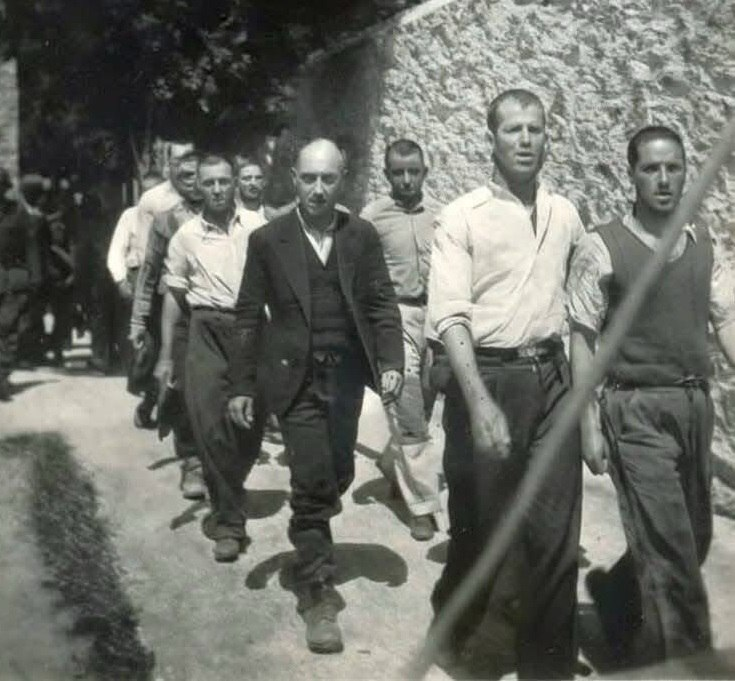
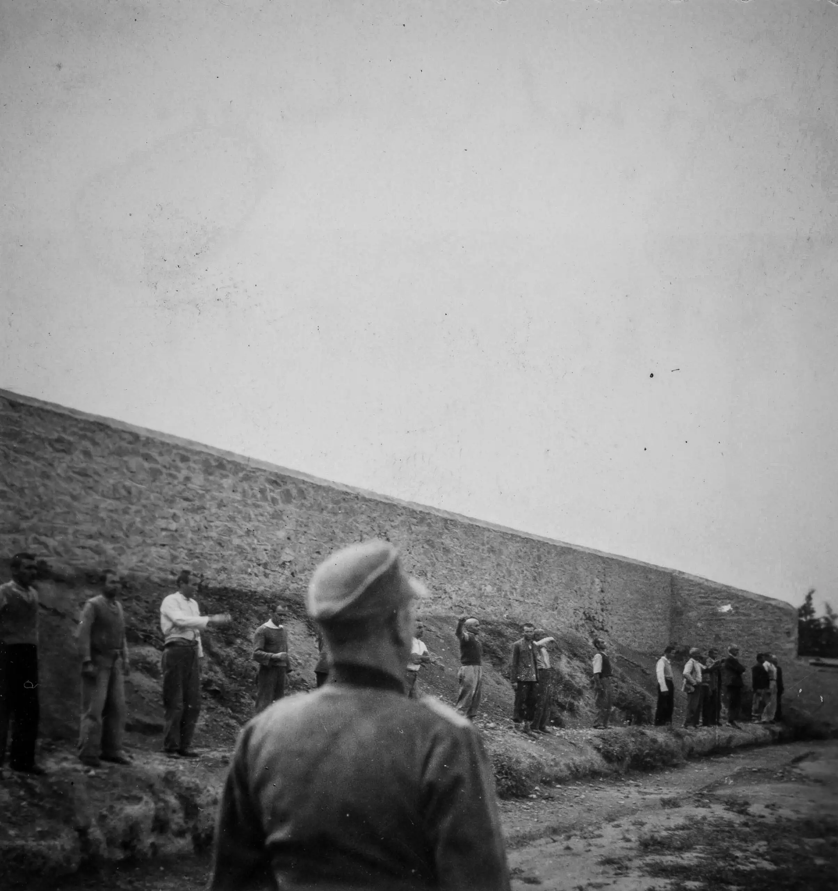
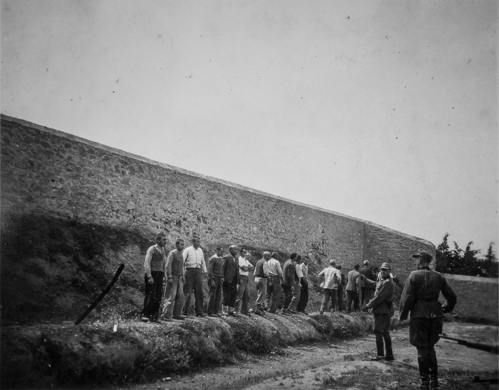
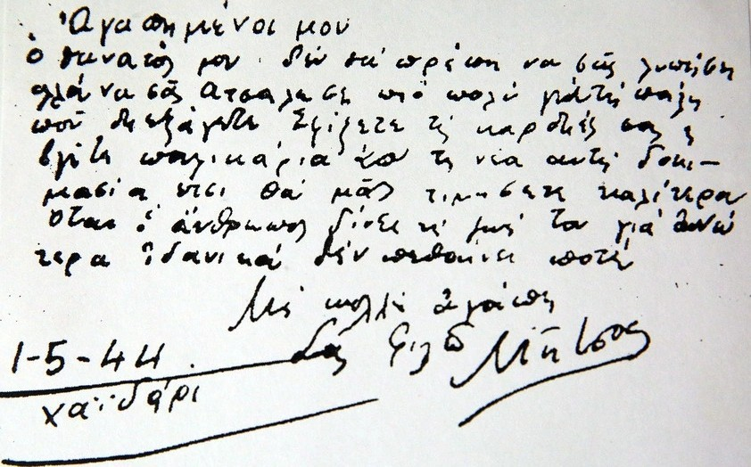

«Οι φωτογραφίες, απεικονίζουν τις τελευταίες στιγμές των 200 αντιστασιακών πριν από την εκτέλεσή τους. Τουλάχιστον 3 πρόσωπα φαίνεται να έχουν ταυτοποιηθεί μέχρι στιγμής από τις φωτογραφίες της Καισαριανής. Ο Θρασύβουλος Καλαφατάκης, 30 ετών, καταγόταν από τον Πλατανιά Χανίων.Ο Δημήτρης Παπαδόπουλος, ποντιακής καταγωγής, ένας από τους παλαιότερους αγωνιστές του κλάδου των οικοδόμων και ο Μεσσήνιος Χρήστος Κουβελιώτης, ηγετική μορφή του ΚΚΕ».



